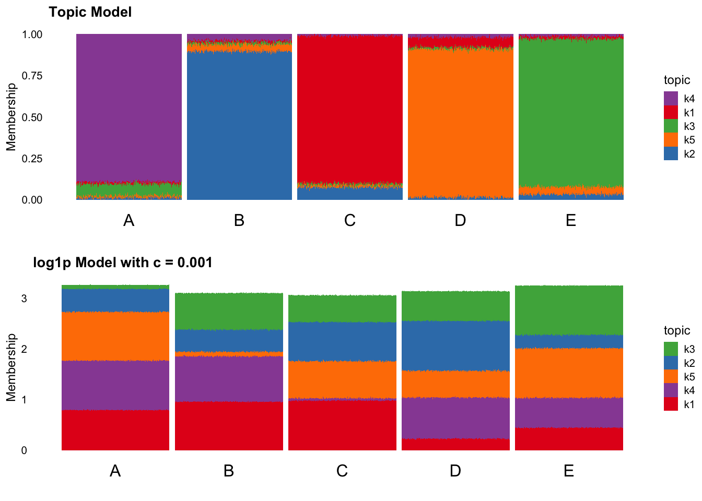

Low Counts Simulation
2025-08-10
Last updated: 2025-09-01
Checks: 5 2
Knit directory: log1p_experiments/
This reproducible R Markdown analysis was created with workflowr (version 1.7.1). The Checks tab describes the reproducibility checks that were applied when the results were created. The Past versions tab lists the development history.
The R Markdown file has unstaged changes. To know which version of
the R Markdown file created these results, you’ll want to first commit
it to the Git repo. If you’re still working on the analysis, you can
ignore this warning. When you’re finished, you can run
wflow_publish to commit the R Markdown file and build the
HTML.
Great job! The global environment was empty. Objects defined in the global environment can affect the analysis in your R Markdown file in unknown ways. For reproduciblity it’s best to always run the code in an empty environment.
The command set.seed(20240402) was run prior to running
the code in the R Markdown file. Setting a seed ensures that any results
that rely on randomness, e.g. subsampling or permutations, are
reproducible.
Great job! Recording the operating system, R version, and package versions is critical for reproducibility.
Nice! There were no cached chunks for this analysis, so you can be confident that you successfully produced the results during this run.
Using absolute paths to the files within your workflowr project makes it difficult for you and others to run your code on a different machine. Change the absolute path(s) below to the suggested relative path(s) to make your code more reproducible.
| absolute | relative |
|---|---|
| ~/Documents/log1p_experiments/output/mle_var.rds | output/mle_var.rds |
Great! You are using Git for version control. Tracking code development and connecting the code version to the results is critical for reproducibility.
The results in this page were generated with repository version 93a77c0. See the Past versions tab to see a history of the changes made to the R Markdown and HTML files.
Note that you need to be careful to ensure that all relevant files for
the analysis have been committed to Git prior to generating the results
(you can use wflow_publish or
wflow_git_commit). workflowr only checks the R Markdown
file, but you know if there are other scripts or data files that it
depends on. Below is the status of the Git repository when the results
were generated:
Ignored files:
Ignored: .DS_Store
Ignored: .Rhistory
Ignored: analysis/.Rhistory
Ignored: analysis/pancreas_cytokine_S1_cache/
Ignored: data/.DS_Store
Unstaged changes:
Modified: analysis/low_counts.Rmd
Note that any generated files, e.g. HTML, png, CSS, etc., are not included in this status report because it is ok for generated content to have uncommitted changes.
These are the previous versions of the repository in which changes were
made to the R Markdown (analysis/low_counts.Rmd) and HTML
(docs/low_counts.html) files. If you’ve configured a remote
Git repository (see ?wflow_git_remote), click on the
hyperlinks in the table below to view the files as they were in that
past version.
| File | Version | Author | Date | Message |
|---|---|---|---|---|
| Rmd | a2e6835 | Eric Weine | 2025-08-11 | added inutition for small c case |
| html | a2e6835 | Eric Weine | 2025-08-11 | added inutition for small c case |
Introduction
Consistently, we have seen in real data that log1p models with small \(c\) tend to have very dense, noisy looking loadings. However, we have yet to figure out why exatly this occurs.
One possiblity I will consider here is that for genes with low rates of expression, the MLE of the estimate of the loadings and factors is very large. As a simple case, consider the model
\[\begin{align*} y & \sim Poisson(\lambda) \\ \log(1 + \lambda / c) &= b. \end{align*}\]
It is simple to show that \(\hat{b} = \log(1 + y / c)\). Below, I have plotted the variance of \(\hat{b}\) for different values of \(c\).
lambda_seq <- seq(1e-10, 25, length.out = 1000)
i <- 1
cc_vec <- c(1e-3, 1e-2, 1e-1, 1, 10, 100, 1000)
res_list <- list()
for (cc in cc_vec) {
sd_vec <- numeric(1000)
i <- 1
for (lambda in lambda_seq) {
print(glue::glue("c = {cc}, lambda = {lambda}"))
y <- rpois(n = 5e6, lambda = lambda)
sd_vec[i] <- sd(log1p(y/cc))
i <- i + 1
}
res_list[[as.character(cc)]] <- sd_vec
}ggplot(data = res_df, aes(x = lambda, y = sd ^ 2)) +
geom_line() +
facet_manual(
~cc, scales = "free",
design = c("
ABC
DEF
#G#
"),
labeller = labeller(cc = function(x) paste("c =", x))) +
cowplot::theme_cowplot() +
xlab(bquote(" " ~ lambda)) +
ylab(expression(Var(hat(b))))
| Version | Author | Date |
|---|---|---|
| a2e6835 | Eric Weine | 2025-08-11 |
The most important difference above is that for small \(c\), the variance of the MLE of \(b\) for \(\lambda \approx 1\) is much larger than the variance of the MLE for larger values of \(\lambda\).
While of course here we are hitting a much more regularized (low-rank) MLE to our count data, I believe that this variance structure may be the key to our previous observations. Below, I demonstrate through simulations that having columns with \(\lambda\) near \(1\) can cause log1p models with small values of \(c\) to miss or obscure relatively simple structure.
Simulations
Scenario 1: Clusters with Background
In the first simualtion scenario, I simulate \(5\) distinct groups, where each group expresses \(20\%\) of all genes at \(\lambda = 15\). All other genes are expressed at \(\lambda = 1.75\).
I first fit both the topic model and the log1p model with \(c = 10^{-3}\) using a random initialization. Below are the results:
grouping <- as.factor(rep(c("A", "B", "C", "D", "E"), each = 200))
n_genes <- 1000
n_groups <- 5
n_cells_per_group <- 200
high_genes_per_group <- 500
high_expr <- 15
low_expr <- 1.75
lambda_list <- list()
Y_list <- list()
set.seed(1)
for (group in 1:n_groups) {
lambda <- rep(low_expr, n_genes)
high_idx <- sample(1:n_genes, size = high_genes_per_group)
lambda[high_idx] <- high_expr
lambda_list[[group]] <- lambda
Lambda <- matrix(
data = rep(lambda, n_cells_per_group),
nrow = n_cells_per_group,
ncol = n_genes,
byrow = TRUE
)
Y <- matrix(
data = rpois(n = n_cells_per_group * n_genes, lambda = as.vector(Lambda)),
nrow = n_cells_per_group,
ncol = n_genes
)
Y_list[[group]] <- Y
}
Y <- do.call(rbind, Y_list)
set.seed(1)
ft_fit <- fit_poisson_nmf(
X = Y,
k = 5,
init.method = "random",
control = list(nc = 7),
verbose = "none"
)
sp1 <- structure_plot(ft_fit, loadings_order = 1:1000, grouping = grouping, gap = 10) +
theme(axis.text.x = element_text(angle = 0,hjust = 0.5, size = 12)) + ylab("Membership") + ggtitle("Topic Model")
set.seed(1)
log1p_mod <- fit_poisson_log1p_nmf(
Y = Y,
K = 5,
loglik = "exact",
init_method = "random",
control = list(maxiter = 250, verbose = FALSE),
cc = 0.001
)
sp2 <- normalized_structure_plot(log1p_mod, loadings_order = 1:1000, grouping = grouping, gap = 10) +
theme(axis.text.x = element_text(angle = 0,hjust = 0.5, size = 12)) + ylab("Membership") + ggtitle("log1p Model with c = 0.001")ggarrange(sp1, sp2, nrow = 2, ncol = 1)
| Version | Author | Date |
|---|---|---|
| a2e6835 | Eric Weine | 2025-08-11 |
While there is a bit of noise, the topic model performs quite well here. However, the log1p model seems to be quite thrown off by the noise, leading to a loading structure that is difficult to interpret.
However, when fitting the log1p model with a rank-1 initialization, the results look much better. Below are structure plots with \(K = 5\) and \(K = 6\) from the log1p model with \(c = 10^{-3}\) where the models are initialized with the best rank-1 fit.
set.seed(1)
log1p_mod_r1_5 <- fit_poisson_log1p_nmf(
Y = Y,
K = 5,
loglik = "exact",
init_method = "rank1",
control = list(maxiter = 250, verbose = FALSE),
cc = 0.001
)
set.seed(1)
log1p_mod_r1_6 <- fit_poisson_log1p_nmf(
Y = Y,
K = 6,
loglik = "exact",
init_method = "rank1",
control = list(maxiter = 250, verbose = FALSE),
cc = 0.001
)
sp3 <- normalized_structure_plot(log1p_mod_r1_5, loadings_order = 1:1000, grouping = grouping, gap = 10) +
theme(axis.text.x = element_text(angle = 0,hjust = 0.5, size = 12)) + ylab("Membership") + ggtitle("log1p Model with c = 0.001 and K = 5 (Rank 1 Init)")
sp4 <- normalized_structure_plot(log1p_mod_r1_6, loadings_order = 1:1000, grouping = grouping, gap = 10) +
theme(axis.text.x = element_text(angle = 0,hjust = 0.5, size = 12)) + ylab("Membership") + ggtitle("log1p Model with c = 0.001 and K = 6 (Rank 1 Init)")ggarrange(sp3, sp4, nrow = 2, ncol = 1)
| Version | Author | Date |
|---|---|---|
| a2e6835 | Eric Weine | 2025-08-11 |
Above, the rank 5 model looks fairly good, where the rank 6 model did not do what I would have expected (I assumed that it was going to fit a “baseline” and then 5 group specific factors). Regardless, I think this pretty clearly shows that especially for small c, a rank-1 initialization can be very important for recovering interpretable factors, because a random initialization seems very subject to fitting to noise.
For reference, here are random and rank-1 initialized log1p models with \(c = 1\):
set.seed(1)
log1p_mod_r1_c1 <- fit_poisson_log1p_nmf(
Y = Y,
K = 5,
loglik = "exact",
init_method = "random",
control = list(maxiter = 250, verbose = FALSE),
cc = 1
)
set.seed(1)
log1p_mod_rand_c1 <- fit_poisson_log1p_nmf(
Y = Y,
K = 5,
loglik = "exact",
init_method = "rank1",
control = list(maxiter = 250, verbose = FALSE),
cc = 1
)
sp5 <- normalized_structure_plot(log1p_mod_r1_c1, loadings_order = 1:1000, grouping = grouping, gap = 10) +
theme(axis.text.x = element_text(angle = 0,hjust = 0.5, size = 12)) + ylab("Membership") + ggtitle("log1p Model with c = 1 and K = 5 (Rank 1 Init)")
sp6 <- normalized_structure_plot(log1p_mod_rand_c1, loadings_order = 1:1000, grouping = grouping, gap = 10) +
theme(axis.text.x = element_text(angle = 0,hjust = 0.5, size = 12)) + ylab("Membership") + ggtitle("log1p Model with c = 1 and K = 5 (Random Init)")ggarrange(sp5, sp6, nrow = 2, ncol = 1)
| Version | Author | Date |
|---|---|---|
| a2e6835 | Eric Weine | 2025-08-11 |
Both of these fits essentially look like somewhat noisier versions of the topic model.
Scenario 2: Clusters with Overlapping High / Low Expression Programs
Building off of the previous simulation, I wanted to see if I could create a scenario where even a rank-1 initialization couldn’t help the log1p model with small c get reasonable looking loadings.
My intuition was that in the previous simulation, fitting a “baseline” made sense because all genes were expressed at least at \(\lambda = 1.75\) across groups. To prevent such a natural baseline, I decided to create \(4\) groups, where each group had high expression for \(25\%\) of genes (\(\lambda = 25\)), low expression for \(25\%\) of genes (\(\lambda = 1\)), and no expression for the remaining genes.
n_genes <- 1000
n_groups <- 4
n_cells_per_group <- 250
high_expr <- 25
low_expr <- 1
lambda_list <- list()
Y_list <- list()
lambda_list[[1]] <- c(
rep(high_expr, 250),
rep(0, 500),
rep(low_expr, 250)
)
lambda_list[[2]] <- c(
rep(0, 250),
rep(high_expr, 250),
rep(low_expr, 250),
rep(0, 250)
)
lambda_list[[3]] <- c(
rep(0, 250),
rep(low_expr, 250),
rep(high_expr, 250),
rep(0, 250)
)
lambda_list[[4]] <- c(
rep(low_expr, 250),
rep(0, 250),
rep(0, 250),
rep(high_expr, 250)
)
set.seed(1)
for (group in 1:n_groups) {
Lambda <- matrix(
data = rep(lambda_list[[group]], n_cells_per_group),
nrow = n_cells_per_group,
ncol = n_genes,
byrow = TRUE
)
Y <- matrix(
data = rpois(n = n_cells_per_group * n_genes, lambda = as.vector(Lambda)),
nrow = n_cells_per_group,
ncol = n_genes
)
Y_list[[group]] <- Y
}
Y <- do.call(rbind, Y_list)Below is a plot showing expression by group:
expr_df <- data.frame(
group = c(
rep("A", 1000), rep("B", 1000), rep("C", 1000), rep("D", 1000)
),
gene_id = c(
1:1000, 1:1000, 1:1000, 1:1000
),
expr = c(
rep(high_expr, 250),
rep(0, 500),
rep(low_expr, 250),
rep(0, 250),
rep(high_expr, 250),
rep(low_expr, 250),
rep(0, 250),
rep(0, 250),
rep(low_expr, 250),
rep(high_expr, 250),
rep(0, 250),
rep(low_expr, 250),
rep(0, 250),
rep(0, 250),
rep(high_expr, 250)
)
)
ggplot(expr_df, aes(x = gene_id, y = expr)) +
geom_bar(stat = "identity") + # Use bars to represent lambda values
facet_wrap(~ group) + # Create a panel for each group
coord_trans(y = "log1p") +
labs(x = "Gene", y = "Expression") +
cowplot::theme_cowplot() # Use a minimal theme for a clean look
| Version | Author | Date |
|---|---|---|
| a2e6835 | Eric Weine | 2025-08-11 |
grouping <- as.factor(rep(c("A", "B", "C", "D"), each = 250))
ft_fit <- fit_poisson_nmf(
X = Y, k = 4, init.method = "random", control = list(nc = 7),
verbose = "none"
)
sp1 <- structure_plot(ft_fit, loadings_order = 1:1000, grouping = grouping) +
theme(axis.text.x = element_text(angle = 0,hjust = 0.5, size = 12)) + ylab("Membership") + ggtitle("Topic Model")
set.seed(1)
log1p_mod_rand <- fit_poisson_log1p_nmf(
Y = Y,
K = 4,
loglik = "exact",
init_method = "random",
control = list(maxiter = 250, verbose = FALSE),
cc = 1e-3
)
sp2 <- normalized_structure_plot(log1p_mod_rand, loadings_order = 1:1000, grouping = grouping) +
theme(axis.text.x = element_text(angle = 0,hjust = 0.5, size = 12)) + ylab("Membership") + ggtitle("log1p Model with c = 0.001 (Random Init)")
set.seed(1)
log1p_mod <- fit_poisson_log1p_nmf(
Y = Y,
K = 4,
loglik = "exact",
init_method = "rank1",
control = list(maxiter = 250, verbose = FALSE),
cc = 1e-3
)
sp3 <- normalized_structure_plot(log1p_mod, loadings_order = 1:1000, grouping = grouping) +
theme(axis.text.x = element_text(angle = 0,hjust = 0.5, size = 12)) + ylab("Membership") + ggtitle("log1p Model with c = 0.001 (Rank 1 Init)")ggarrange(sp1, sp2, sp3, nrow = 3, ncol = 1)
| Version | Author | Date |
|---|---|---|
| a2e6835 | Eric Weine | 2025-08-11 |
While the topic model appears to discover the structure very nicely, neither the rank-1 initialized nor random initialized log1p model appear to capture the structure very well.
Scenario 3: 95% Ubiquitously Low Expressed Genes
At Peter’s suggestion, I wanted to see if I could isolate the effect of lowly expressed genes by comparing log1p models to topic models fit to a matrix with vs. without many low expressed genes.
To do this, I created \(4\) distinct groups, where each group expresses the same set of \(960\) genes with a rate of \(1.5\), and in the remaining \(40\) genes, each group expressed \(10\) genes with rate \(50\) and did not express the other \(30\) genes.
n_genes <- 1000
n_groups <- 4
n_cells_per_group <- 250
high_expr <- 50
low_expr <- 1.5
lambda_list <- list()
Y_list <- list()
lambda_list[[1]] <- c(
rep(low_expr, 960),
rep(high_expr, 10),
rep(0, 30)
)
lambda_list[[2]] <- c(
rep(low_expr, 960),
rep(0, 10),
rep(high_expr, 10),
rep(0, 20)
)
lambda_list[[3]] <- c(
rep(low_expr, 960),
rep(0, 20),
rep(high_expr, 10),
rep(0, 10)
)
lambda_list[[4]] <- c(
rep(low_expr, 960),
rep(0, 30),
rep(high_expr, 10)
)
set.seed(1)
for (group in 1:n_groups) {
Lambda <- matrix(
data = rep(lambda_list[[group]], n_cells_per_group),
nrow = n_cells_per_group,
ncol = n_genes,
byrow = TRUE
)
Y <- matrix(
data = rpois(n = n_cells_per_group * n_genes, lambda = as.vector(Lambda)),
nrow = n_cells_per_group,
ncol = n_genes
)
Y_list[[group]] <- Y
}
Y <- do.call(rbind, Y_list)The topic model is able to cleanly pickup the group structure:
set.seed(1)
ft_fit_r1 <- fastTopics:::fit_pnmf_rank1(Y)
init_LL <- cbind(
ft_fit_r1$L,
matrix(
data = 1e-5,
nrow = 1000,
ncol = 3
)
)
init_FF <- cbind(
ft_fit_r1$F,
matrix(
data = 1e-5,
nrow = 1000,
ncol = 3
)
)
ft_fit0 <- init_poisson_nmf(
X = Y, F = init_FF, L = init_LL
)
ft_fit <- fit_poisson_nmf(
X = Y, fit0 = ft_fit0, control = list(nc = 7),
verbose = "none", numiter = 500
)
structure_plot(ft_fit, loadings_order = 1:1000, grouping = rep(c("A", "B", "C", "D"), each = 250)) +
theme(axis.text.x = element_text(angle = 0,hjust = 0.5, size = 12)) + ylab("Membership")The log1p model with \(c = 10^{-3}\) is less able to capture the structure, likely as a result of the low expressed genes. Below is a plot with a random initialization:
set.seed(1)
log1p_mod <- fit_poisson_log1p_nmf(
Y = Y,
K = 4,
loglik = "exact",
init_method = "random",
control = list(maxiter = 1000, verbose = FALSE),
cc = 1e-3
)
normalized_structure_plot(log1p_mod, loadings_order = 1:1000, grouping = rep(c("A", "B", "C", "D"), each = 250)) +
theme(axis.text.x = element_text(angle = 0,hjust = 0.5, size = 12)) + ylab("Membership")Things look better with a rank-1 initialization, but the structure clearly still isn’t being fully captured:
set.seed(1)
log1p_mod_r1_init <- fit_poisson_log1p_nmf(
Y = Y,
K = 4,
loglik = "exact",
init_method = "rank1",
control = list(maxiter = 1000, verbose = FALSE),
cc = 1e-3
)
normalized_structure_plot(log1p_mod_r1_init, loadings_order = 1:1000, grouping = rep(c("A", "B", "C", "D"), each = 250)) +
theme(axis.text.x = element_text(angle = 0,hjust = 0.5, size = 12)) + ylab("Membership")However, adding one more factor does help:
set.seed(1)
log1p_mod_r1_init_k5 <- fit_poisson_log1p_nmf(
Y = Y,
K = 5,
loglik = "exact",
init_method = "rank1",
control = list(maxiter = 1000, verbose = FALSE),
cc = 1e-3
)
normalized_structure_plot(log1p_mod_r1_init_k5, loadings_order = 1:1000, grouping = rep(c("A", "B", "C", "D"), each = 250)) +
theme(axis.text.x = element_text(angle = 0,hjust = 0.5, size = 12)) + ylab("Membership")So, overall it seems clear that the log1p model with small c is at least less efficient (as it requires more factors) in order to capture the structure in this case.
However, removing the low expressed genes, the log1p model with small c captures the structure reasonably well with just 4 factors:
set.seed(1)
log1p_mod_big <- fit_poisson_log1p_nmf(
Y = Y[,951:1000],
K = 4,
loglik = "exact",
init_method = "rank1",
control = list(maxiter = 1000, verbose = FALSE),
cc = 1e-3
)
normalized_structure_plot(log1p_mod_big, loadings_order = 1:1000, grouping = rep(c("A", "B", "C", "D"), each = 250)) +
theme(axis.text.x = element_text(angle = 0,hjust = 0.5, size = 12)) + ylab("Membership")
The topic model still capture the structure with the low expressed genes removed:
set.seed(1)
ft_fit_r1 <- fastTopics:::fit_pnmf_rank1(Y[,951:1000])
init_LL <- cbind(
ft_fit_r1$L,
matrix(
data = 1e-5,
nrow = 1000,
ncol = 3
)
)
init_FF <- cbind(
ft_fit_r1$F,
matrix(
data = 1e-5,
nrow = 50,
ncol = 3
)
)
ft_fit0 <- init_poisson_nmf(
X = Y[,951:1000], F = init_FF, L = init_LL
)
ft_fit <- fit_poisson_nmf(
X = Y[,951:1000], fit0 = ft_fit0, control = list(nc = 7),
verbose = "none", numiter = 500
)
structure_plot(ft_fit, loadings_order = 1:1000, grouping = rep(c("A", "B", "C", "D"), each = 250)) +
theme(axis.text.x = element_text(angle = 0,hjust = 0.5, size = 12)) + ylab("Membership")Conclusion
I believe that the above simulations as well as the intuition given by the variance of the MLE help to explain what we have observed in real data for small \(c\). Most of these simulations seem to argue against using very small \(c\) in practice. However, moderate \(c\) seems to still work reasonably well here.
sessionInfo()R version 4.4.0 (2024-04-24)
Platform: aarch64-apple-darwin20
Running under: macOS Ventura 13.5
Matrix products: default
BLAS: /Library/Frameworks/R.framework/Versions/4.4-arm64/Resources/lib/libRblas.0.dylib
LAPACK: /Library/Frameworks/R.framework/Versions/4.4-arm64/Resources/lib/libRlapack.dylib; LAPACK version 3.12.0
locale:
[1] en_US.UTF-8/en_US.UTF-8/en_US.UTF-8/C/en_US.UTF-8/en_US.UTF-8
time zone: America/New_York
tzcode source: internal
attached base packages:
[1] stats graphics grDevices utils datasets methods base
other attached packages:
[1] ggpubr_0.6.0 ggh4x_0.3.0 log1pNMF_0.1-6 fastTopics_0.7-25
[5] ggplot2_3.5.2
loaded via a namespace (and not attached):
[1] tidyselect_1.2.1 viridisLite_0.4.2 farver_2.1.2
[4] dplyr_1.1.4 fastmap_1.2.0 lazyeval_0.2.2
[7] promises_1.3.2 digest_0.6.37 lifecycle_1.0.4
[10] invgamma_1.1 magrittr_2.0.3 compiler_4.4.0
[13] rlang_1.1.6 sass_0.4.10 progress_1.2.3
[16] tools_4.4.0 yaml_2.3.10 data.table_1.17.0
[19] knitr_1.50 ggsignif_0.6.4 labeling_0.4.3
[22] prettyunits_1.2.0 htmlwidgets_1.6.4 plyr_1.8.9
[25] abind_1.4-5 Rtsne_0.17 workflowr_1.7.1
[28] withr_3.0.2 purrr_1.0.4 grid_4.4.0
[31] git2r_0.33.0 colorspace_2.1-1 scales_1.3.0
[34] gtools_3.9.5 MASS_7.3-61 cli_3.6.5
[37] rmarkdown_2.29 crayon_1.5.3 startupmsg_0.9.6.1
[40] generics_0.1.3 RcppParallel_5.1.10 rstudioapi_0.16.0
[43] tzdb_0.4.0 httr_1.4.7 reshape2_1.4.4
[46] pbapply_1.7-2 cachem_1.1.0 stringr_1.5.1
[49] parallel_4.4.0 vctrs_0.6.5 Matrix_1.7-0
[52] jsonlite_2.0.0 carData_3.0-5 car_3.1-2
[55] hms_1.1.3 mixsqp_0.3-54 ggrepel_0.9.6
[58] rstatix_0.7.2 irlba_2.3.5.1 plotly_4.10.4
[61] tidyr_1.3.1 jquerylib_0.1.4 glue_1.8.0
[64] cowplot_1.1.3 uwot_0.2.3 stringi_1.8.7
[67] gtable_0.3.6 later_1.4.2 sfsmisc_1.1-18
[70] quadprog_1.5-8 munsell_0.5.1 tibble_3.2.1
[73] pillar_1.10.2 htmltools_0.5.8.1 truncnorm_1.0-9
[76] R6_2.6.1 rprojroot_2.0.4 evaluate_1.0.3
[79] lattice_0.22-6 readr_2.1.5 backports_1.5.0
[82] RhpcBLASctl_0.23-42 broom_1.0.6 SQUAREM_2021.1
[85] ashr_2.2-66 httpuv_1.6.15 bslib_0.9.0
[88] Rcpp_1.0.14 distr_2.9.3 whisker_0.4.1
[91] xfun_0.52 fs_1.6.6 pkgconfig_2.0.3